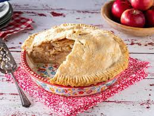

Zippy Shepherd's Pie

Description
Ingredients:
- 1 pound potatoes, peeled and chopped
- 1 tablespoon canola oil
- 1 pound ground beef
- 1 large onion, finely chopped
How to make:
- Bring a large pot of lightly salted water to a boil. Add potatoes, and cook until tender but still firm, about 15 minutes; drain, and return to pan.
- While potatoes are boiling, heat oil in a large skillet. Cook ground beef with onion, red pepper, and garlic until beef is evenly brown. Stir in beef broth, ketchup, soy sauce, Worcestershire sauce, and curry powder. Bring to a boil, and simmer 3 to 4 minutes. Mix cornstarch with a little water to form a paste, then stir into skillet with tomatoes, peas and carrots. Cook until thickened; season with salt and pepper. Spoon into a casserole dish.
- Preheat oven on broiler setting. Add milk and butter to cooked potatoes, and whip until smooth and creamy. Spoon over meat mixture. Sprinkle top with shredded cheese.
- Place under broiler for 3 to 5 minutes, or until cheese is melted and speckled with brown.